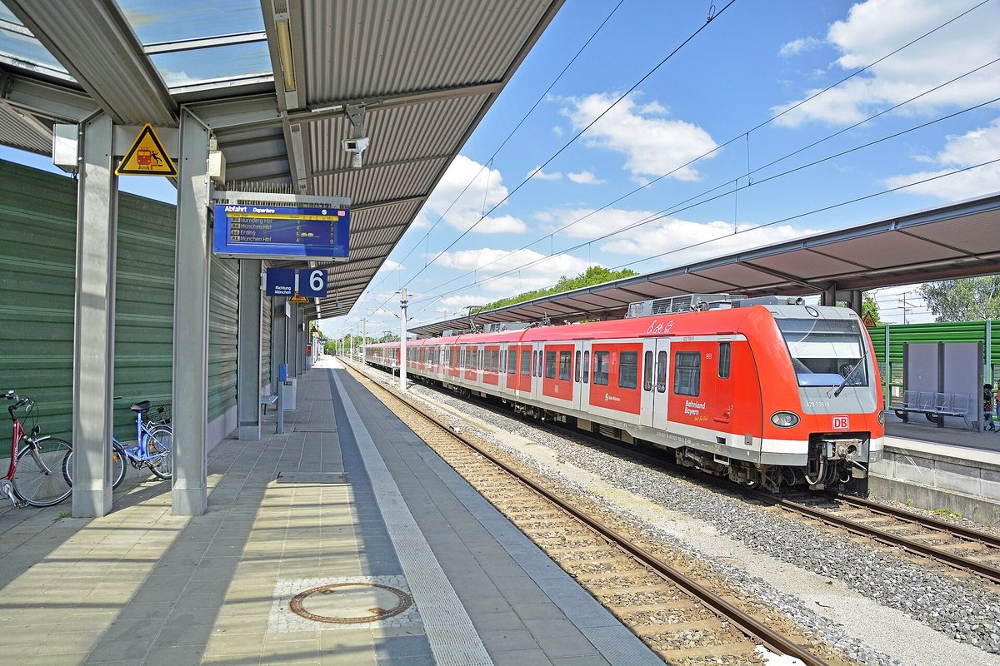

독일 바이에른 페터스하우젠, 공영 환승주차장 전체를 태양광 지붕으로…연 180만kWh, 2027년 7월 전력 공급 목표

지자체 공기업 KUP가 P&R 주차장 카포트 태양광 착공, 배터리·전기차 충전기·급속충전기도 함께…주 정부 태양광 이니셔티브가 행정구마다 1건씩 지원하는 시범사업
독일 바이에른주 페터스하우젠의 지자체 공기업 KUP(Kommunalunternehmen)가 지겔라이 거리(Ziegeleistraße)의 환승주차장(P&R)에 카포트형 태양광 발전설비 공사를 시작했다. 지자체 재무관을 겸하는 다니엘 슈타델만 KUP 대표는 주민총회에서 "7월부터 전력망에 공급하는 것이 목표"라며 2027년 7월 가동 계획을 밝혔고, 참석자들은 박수로 답했다. 설비는 길가 첫 줄을 뺀 주차장 거의 모든 줄을 지붕 구조물로 덮고 그 위에 모듈을 얹는 방식으로 연간 약 180만kWh를 생산할 예정이며, 배터리 저장장치와 전기차 충전기, 급속충전기도 함께 들어서고 지붕 아래에는 주차장 조명이 달린다. 11월 지하 공사에서 깊이 6m의 기초를 놓고 새해에 철골과 지붕을, 2월부터 모듈을 올리는 일정인데, 중압 변전설비가 제때 완공되는지가 변수로 꼽혔다. 이 사업은 바이에른주 태양광 이니셔티브가 행정구마다 1건씩 지원하는 시범사업으로, 이날 진행 상황을 물은 사람은 전 지자체 에너지 담당이자 현재 시민에너지협동조합 뷔르거에네르기 하페비(BürgerEnergie HaPeVi) 이사인 에른스트 놀트였다. 공사는 주차장을 구역별로 나눠 차례로 진행하며, KUP 측은 팬데믹 이후 주차장이 가득 찬 적이 없어 공사 중 통근자 주차난은 없을 것으로 내다봤다.
시민에너지 관점
주 정부가 행정구마다 1건씩 공영주차장 태양광 시범사업을 골라 지원하는 방식은, 지역마다 눈으로 볼 수 있는 본보기를 하나씩 세워 다른 지자체가 따라 하게 만드는 확산 전략이다. 주차장에 구조물을 세우면 이용이 불편해진다는 우려가 나올 수 있지만, 페터스하우젠은 구역을 나눠 공사하며 주차 기능을 유지하고, 완공 뒤에는 지붕 아래 조명과 충전 설비까지 갖춘 주차장이 된다. 공영주차장은 이미 공공이 가진 땅이라 새로 부지를 찾을 필요가 없고, 지자체 공기업처럼 지역이 직접 소유하면 전기를 판 수익이 외부 사업자가 아니라 주민의 공공 서비스로 돌아갈 수 있다는 점에서 지역 소유가 답이다. 국내에서도 광역 지자체가 시·군마다 공영주차장 태양광 시범사업을 하나씩 지정하고, 공공과 주민이 함께 소유하는 구조로 첫 사례를 만들어야 한다.
출처: Merkur 2026-10-28 Petra Schafflik 원문 보기
ドイツ・バイエルン州ペータースハウゼン、公営パーク・アンド・ライド駐車場全体を太陽光の屋根に…年180万kWh、2027年7月の送電開始目指す
自治体公企業KUPがP&R駐車場のカーポート太陽光に着工、蓄電池・EV充電器・急速充電器も併設…州の太陽光イニシアチブが行政管区ごとに1件ずつ支援するモデル事業
ドイツ・バイエルン州ペータースハウゼンの自治体公企業KUP（Kommunalunternehmen）が、ツィーゲライ通り（Ziegeleistraße）のパーク・アンド・ライド（P&R）駐車場でカーポート型太陽光発電設備の工事を始めた。自治体の財務担当を兼ねるKUPのダニエル・シュタデルマン代表は住民集会で「7月から送電網に供給するのが目標だ」と述べて2027年7月の稼働計画を明らかにし、参加者は拍手で応えた。設備は道路沿いの最初の列を除く駐車場のほぼすべての列を屋根構造で覆い、その上にモジュールを載せる方式で、年間約180万kWhを発電する予定で、蓄電池とEV充電器、急速充電器も併設され、屋根の下には駐車場の照明が取り付けられる。11月の地下工事で深さ6mの基礎を据え、年明けに鉄骨と屋根を、2月からモジュールを設置する日程だが、中圧変電設備が予定通り完成するかどうかが不確定要素とされる。この事業はバイエルン州の太陽光イニシアチブが行政管区ごとに1件ずつ支援するモデル事業で、この日進捗を尋ねたのは、元自治体エネルギー担当で現在は市民エネルギー協同組合ビュルガーエネルギー・ハペフィ（BürgerEnergie HaPeVi）の理事を務めるエルンスト・ノルト氏だった。工事は駐車場を区画ごとに分けて順に進め、KUP側はパンデミック以降駐車場が満車になったことはなく、工事中も通勤者の駐車難は起きないとみている。
市民エネルギーの視点
州政府が行政管区ごとに1件ずつ公営駐車場の太陽光モデル事業を選んで支援するやり方は、地域ごとに目に見える手本を一つずつ立て、他の自治体が後に続くよう促す普及戦略だ。駐車場に構造物を建てると使いにくくなるとの懸念もありうるが、ペータースハウゼンは区画を分けて工事しながら駐車機能を保ち、完成後は屋根の下に照明と充電設備まで備えた駐車場になる。公営駐車場はすでに公共が持つ土地で新たに用地を探す必要がなく、自治体公企業のように地域が直接所有すれば、売電収益が外部の事業者ではなく住民の公共サービスに戻りうるという点で、地域所有こそが答えだ。韓国でも広域自治体が市・郡ごとに公営駐車場の太陽光モデル事業を一つずつ指定し、公共と住民が共に所有する仕組みで最初の事例をつくるべきだ。
出典: Merkur 2026-10-28 ペトラ・シャフリク（Petra Schafflik） 原文を読む
德国巴伐利亚州彼得斯豪森把公营换乘停车场整体改造为光伏车棚…年发电180万kWh，目标2027年7月并网供电
地方公营企业KUP开工建设P&R停车场光伏车棚，同步配置储能电池、电动车充电桩和快充桩…属于州光伏倡议在每个行政区各支持1个的示范项目
德国巴伐利亚州彼得斯豪森的地方公营企业KUP（Kommunalunternehmen）已在齐格莱街（Ziegeleistraße）的换乘停车场（P&R）开工建设车棚式光伏发电设施。兼任地方财务主管的KUP负责人丹尼尔·施塔德尔曼（Daniel Stadelmann）在居民大会上表示，"目标是从7月起向电网供电"，公布了2027年7月投运的计划，与会者报以掌声。除沿街第一排外，停车场几乎所有车位排都将用棚顶结构覆盖并在其上安装组件，预计年发电量约180万kWh，同时配建储能电池、电动车充电桩和快充桩，棚顶下方还将安装停车场照明。工程计划11月进行地下施工、浇筑深6米的基础，新年安装钢结构和棚顶，2月起安装组件，但中压变电设施能否按时建成被视为变数。该项目是巴伐利亚州光伏倡议在每个行政区各支持1个的示范项目；当天询问进展的是曾任地方能源负责人、现任公民能源合作社BürgerEnergie HaPeVi理事的恩斯特·诺尔特（Ernst Nold）。工程将把停车场分区依次施工，KUP方面认为，疫情以来停车场从未停满，施工期间通勤者不会遇到停车难。
市民能源视角
州政府在每个行政区各挑选1个公营停车场光伏示范项目予以支持，是在各地区分别树立看得见的样板、带动其他地方政府跟进的推广策略。有人可能担心在停车场搭建结构会造成使用不便，但彼得斯豪森分区施工、保持停车功能，建成后还将成为棚下有照明和充电设施的停车场。公营停车场本就是公共拥有的土地，无须另找用地；若像地方公营企业这样由地方直接拥有，售电收益就可能回流到居民的公共服务而非外部开发商，这正是地方所有之所以是答案的原因。韩国也应由广域地方政府在每个市、郡各指定一个公营停车场光伏示范项目，以公共与居民共同拥有的结构做出第一个案例。
来源: Merkur 2026-10-28 Petra Schafflik 查看原文
Petershausen in Bavaria covers its public park-and-ride car park with a solar roof, aiming to feed 1.8 million kWh a year into the grid from July 2027
Municipal company KUP breaks ground on a carport solar plant at the P&R car park with a battery, EV chargers and a rapid charger; it is a pilot under the Bavarian solar initiative, which funds one project per administrative district
The municipal company of Petershausen in Bavaria, Germany (Kommunalunternehmen, KUP), has started building a carport solar plant at the park-and-ride car park on Ziegeleistraße. Daniel Stadelmann, the municipality's treasurer and managing director of KUP, told a residents' meeting that "our goal is to feed into the grid from July", setting out plans to start operating in July 2027, and the audience responded with applause. Almost every row of the car park except the first one along the road will be roofed with carport structures carrying solar modules, which are expected to generate about 1.8 million kWh a year; a battery, EV chargers and a rapid charger will be installed as well, and lights under the carports will illuminate the parking spaces. Foundations 6 m deep will be laid during underground work in November, steelwork and roofing will follow in the new year and modules from February, though whether the medium-voltage transformer station is finished on time remains the uncertainty. The project is a pilot under the Bavarian state's solar initiative, which supports one scheme in each administrative district, and the question about its progress came from Ernst Nold, a former municipal energy officer who now sits on the board of the citizen energy co-operative BürgerEnergie HaPeVi. Work will move through the car park section by section, and KUP expects no parking shortage for commuters during construction because the car park has not been full since the pandemic.
Citizen Energy View
Having the state pick and fund one public car-park solar pilot in each administrative district is a dissemination strategy: it puts a visible model in every region so that other municipalities can follow. There may be worries that building structures over a car park makes it harder to use, but Petershausen keeps the car park working by building section by section, and once finished it will have lighting and charging under the roof. Public car parks are land the public already owns, so no new site has to be found, and when a local body such as a municipal company owns the plant directly, electricity income can flow back into public services for residents rather than to an outside developer, which is why local ownership is the answer. In Korea, too, provincial governments should designate one public car-park solar pilot in each city and county and make the first examples jointly owned by the public sector and residents.
Source: Merkur 2026-10-28 Petra Schafflik Read the original